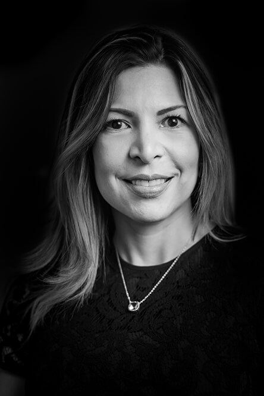

Carlos Alberto Modi
Fundador y Director en Ardina Finance
Con más de 20 años de experiencia, Carlos Alberto Modi comenzó su carrera en UBS y después trabajó para Credit Suisse y Deutsche Bank. En 2008, se incorporó al banco privado LGT. Su experiencia en la gestión de activos y el análisis de riesgos le ha permitido desarrollar su propia cartera de clientes privados. Titulado CIIA (Diploma de Analista Financiero Internacional) y CIWM (Diploma Internacional de Asesor en Inversiones), ostenta también la licencia de ejecutivo principal Nº 563, según resolución SMV No. 353-16 de 8 de julio de 2016, y una licencia de analista y corredor de valores Nº 1391, según resolución SMV No. 352-16 de 8 de julio de 2016.
Cesar Zango Macías
Socio y Director en Ardina Finance
Cesar Zango Macías posee una amplia experiencia en el sector financiero y contable, habiendo trabajado para grupos internacionales como L'Oréal, Terra Travel (Grupo Telefónica) y Andanza Technology. En 2013, se asoció en Panamá con 360 Consulting Group, asesorando a pymes y particulares en temas fiscales y financieros.

Elka Lorena Segrera Castro
Socia de Ardina Finance
Como abogada por la Universidad Externado de Bogotá (Colombia) y certificada por las autoridades panameñas, Elka Lorena Segrera Castro posee más de 10 años de experiencia en el derecho corporativo y comercial de Panamá. Su experiencia profesional le llevó a crear 360 Consulting Group en 2013, una firma de abogados especializada en derecho laboral y planificación patrimonial.
Angie Paola Segrera Castro
Directora Financiera en Ardina Finance
Con una especialización en Negocios Internacionales otorgada por la Universidad de Bogotá (Colombia) y más de siete años de experiencia en el sector bancario de Panamá, Angie Paola Segrera Castro trabaja como Directora Financiera del grupo. Su área de desarrollo son los servicios bancarios para clientes internacionales en la zona libre de aduanas de Colón y está especializada en seguridad bancaria y gestión de flujos de efectivo.
Carlos Tablate
Gestor de carteras en Ardina Finance
Licenciado en Administración y Dirección de Empresas y especializado en finanzas por la Universidad Carlos III de Madrid, Carlos Tablate trabajó en la gestión de activos del BBVA, en Madrid. Posee cuatro años de experiencia tanto en banca privada como en asesoría de inversiones. Posee una licencia de analista y corredor de valores N° 1212, según resolución SMV N° 429-2015 de la República de Panamá. Actualmente es gestor de carteras en Ardina Finance.
Dora Bastidas
Responsable de Cumplimiento en Ardina Finance
Después de realizar estudios de Administración en la Universidad de Santa María la Antigua, en Panamá, Dora Bastidas recibió la Licenciatura en Contabilidad por la Universidad Interamericana de Panamá.
Posee la especialización de Contadora Pública Autorizada. Con más de 30 años de experiencia como ejecutiva en el sector bancario y financiero, ha trabajado en UBS Panamá, Citibank y Andbank, en Panamá. Asimismo, posee licencias otorgadas por la Superintendencia del Mercado de Valores de Panamá: licencia de analista y correrdor de valores Nº 680-11, según resolución CNV-243-2011 de 8 de julio de 2011, y licencia de ejecutivo principal, Nº 326-12, según resolución CNV-123-12 del 2 de abril de 2012.